Legal AI
POC ระบบค้นคว้ากฎหมายไทยด้วย AI — สร้างเพื่อพิสูจน์ว่า RAG + Structured Output สามารถทำให้ AI อ้างอิงกฎหมายจริงได้อย่างน่าเชื่อถือ
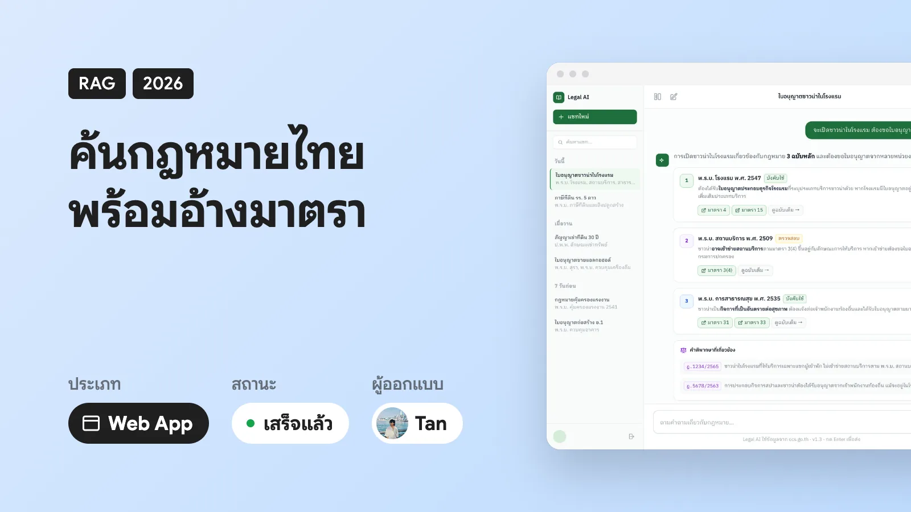
ระบบค้นคว้ากฎหมายไทย 84,000+ มาตรา สำหรับทนายความ — ถามเป็นภาษาคน ได้คำตอบพร้อมอ้างอิงมาตราจริงจากฐานข้อมูล
Overview
Legal AI คือ POC ระบบค้นคว้ากฎหมายไทยที่ใช้ RAG (Retrieval-Augmented Generation) ดึงเนื้อหามาตราจริงจาก Database มาเป็น context ให้ AI ตอบ — ไม่ใช่แค่ generate จากความรู้ทั่วไป แต่อ้างอิงกฎหมายจริงที่ scrape มาจากสำนักงานคณะกรรมการกฤษฎีกา (OCS)
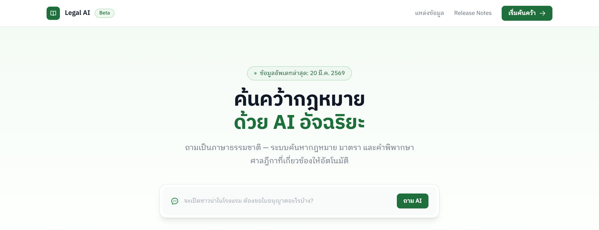
Design Thinking Process
ทำไมทนายความถึงต้องการเครื่องมือแบบนี้
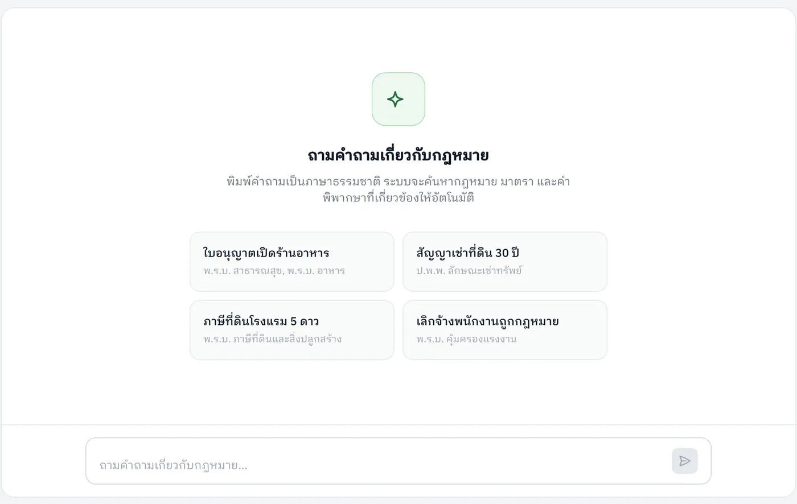
Empathize · ทนายความกับการค้นคว้ากฎหมาย — ปัญหาที่ซ่อนอยู่
ทนายความไทยต้องค้นกฎหมาย 84,000+ มาตรา จากหลายพ.ร.บ. เพื่อเตรียมคดีหนึ่งคดี การค้นหาแบบเดิมใช้ keyword search บนเว็บ OCS ซึ่งต้องรู้ชื่อพ.ร.บ.ที่แน่นอน หรือเลข "มาตรา" ที่ต้องการ — ถ้าไม่รู้ก็หาไม่เจอ
Insight: ทนายรู้ "สถานการณ์" แต่ไม่รู้ว่าต้องค้น "มาตราอะไร" — ต้องการเครื่องมือที่ถามเป็นภาษาคนได้
Define · "ถ้า AI ตอบกฎหมายผิด อาจทำให้แพ้คดี"
ChatGPT ตอบกฎหมายได้ แต่มักอ้างมาตราผิด หรือ hallucinate กฎหมายที่ไม่มีอยู่จริง ซึ่งอันตรายมากสำหรับงานทนายความ — ต้องการระบบที่ อ้างอิงกฎหมายจริง ที่ตรวจสอบได้
HMW: How might we สร้าง AI ที่ตอบกฎหมายได้แม่นยำ โดยอ้างอิงเฉพาะมาตราจริงจากฐานข้อมูล?
Ideate · RAG — ให้ AI อ้างอิงจากฐานข้อมูลจริง
ใช้ RAG (Retrieval-Augmented Generation) แทนการให้ AI ตอบจากความรู้ทั่วไป:
• Scrape กฎหมาย 1,811 ฉบับ 84,376 มาตราจาก OCS
• Full-text search + Vector search (pgvector) หามาตราที่เกี่ยวข้อง
• ส่งเนื้อมาตราจริงเป็น context ให้ GPT-4o
• สั่งให้ AI อ้างอิงเฉพาะมาตราที่ปรากฏใน context เท่านั้น
Prototype · 3-Panel Layout — Chat + Citations + Law Viewer
ออกแบบ Chat Page เป็น 3 ส่วน: Sidebar (ประวัติแชท), Chat Area (ถาม-ตอบ AI พร้อม Citation Cards), Law Viewer Panel (ดูเนื้อกฎหมายจริง) — กด Citation Card แล้วเปิดดูเนื้อกฎหมายจริงได้ทันทีโดยไม่ต้องออกจากหน้าแชท
Key Decision: Citation Cards ใช้สี 3 แบบ (เขียว/ม่วง/ฟ้า) แยกตาม role ของกฎหมาย เพื่อให้ทนายเห็นภาพรวมได้เร็ว
Test · Comparison Testing — Legal AI vs Gemini Pro
ใช้ Playwright ทดสอบ 5 คำถามกฎหมายเปรียบเทียบ Legal AI กับ Gemini Pro:
• Legal AI: Structured output (citations + summary) ดีกว่า — เห็นมาตราอ้างอิงชัดเจน
• Gemini: เนื้อหาละเอียดกว่า ครบกว่า
• Next: เพิ่ม Vector Search เพื่อดึงมาตราที่เกี่ยวข้องได้แม่นยำขึ้น
Chat Interface
ถามเป็นภาษาคน — ได้คำตอบพร้อม Citation Cards ที่กดดูกฎหมายจริงได้
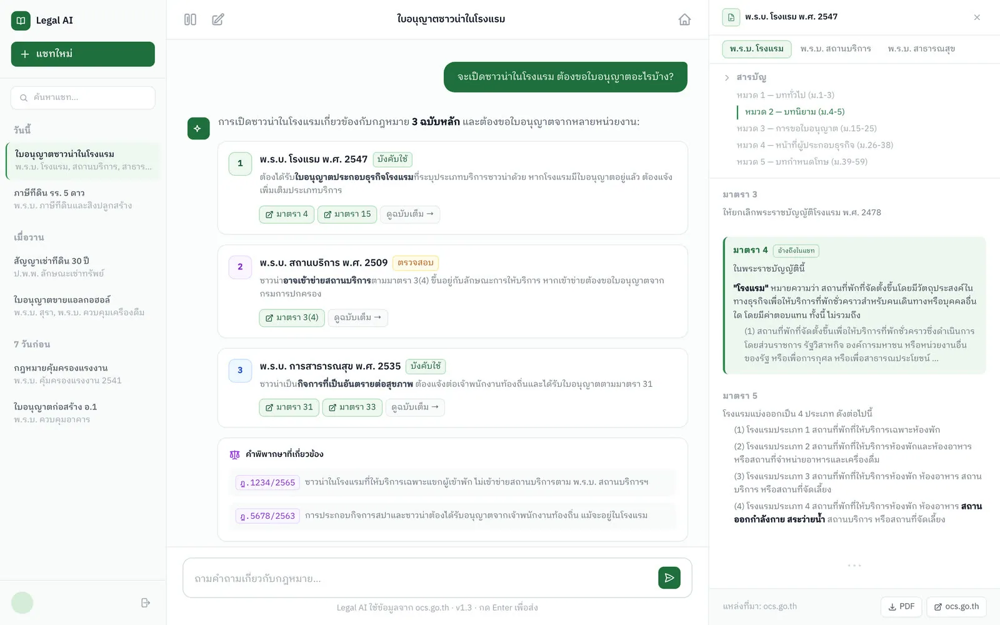
Key Features
ฟีเจอร์หลักที่ออกแบบมาเพื่อทนายความ
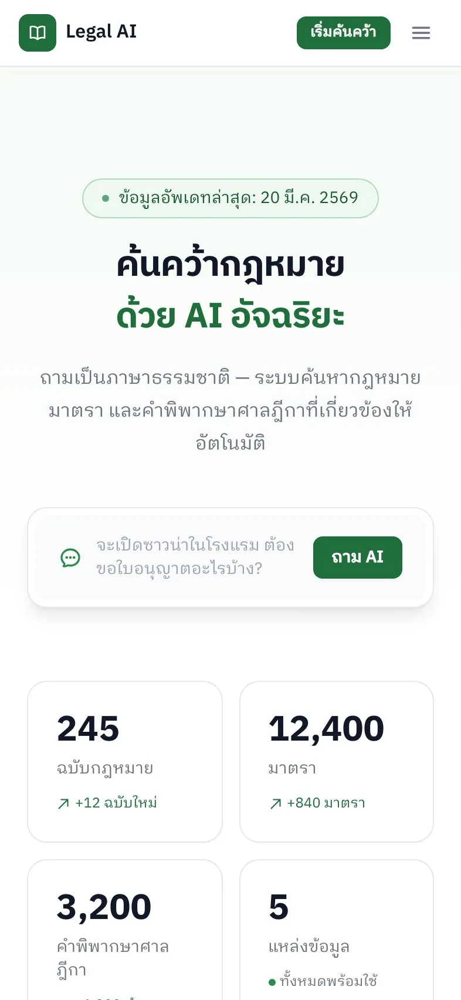
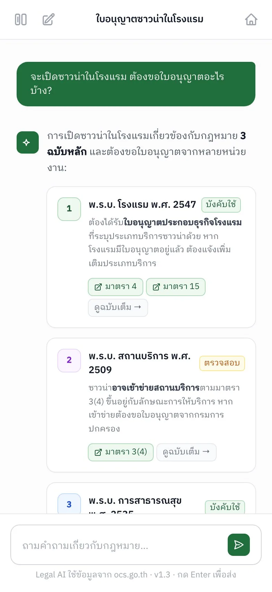
RAG Search
Full-text + Vector search 84K มาตรา — ดึงเนื้อกฎหมายจริงมาเป็น context ให้ AI ไม่ hallucinate
Citation Cards
แสดงกฎหมายที่อ้างอิงเป็น card สี 3 แบบ กดดูเนื้อกฎหมายจริงได้ทันที
Law Viewer Panel
อ่านเนื้อกฎหมายจริงจาก DB พร้อม highlight มาตราที่ AI อ้างอิง + สารบัญ
Structured Output
AI ตอบเป็น structured JSON: content + citations + court decisions + summary box
Chat History
ประวัติแชทจัดกลุ่มตามวัน ค้นหาได้ ลบได้ Auto-generate ชื่อ + description
Markdown Rendering
รองรับ headings, bold, bullets, numbered lists, tables, HR ใน AI response
Auth System
Supabase Auth — Email/Password + Google OAuth พร้อม RLS user-only data
Landing Page
Hero + stats จาก DB, แหล่งข้อมูล, Release Notes, Login Modal
RAG Architecture
ระบบ Retrieval-Augmented Generation ที่ทำให้ AI อ้างอิงกฎหมายจริง
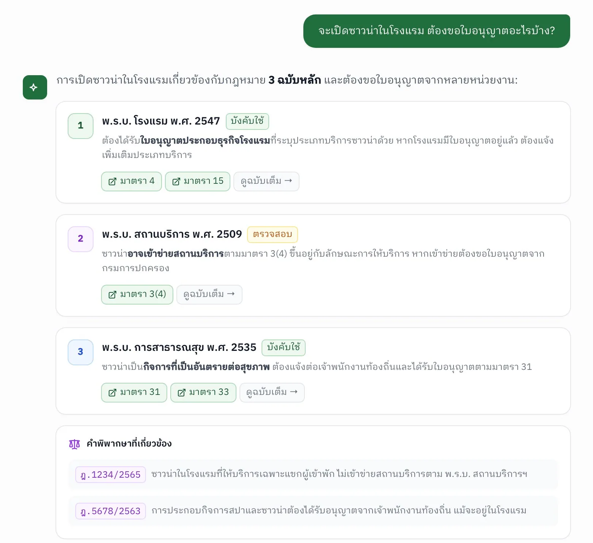
Scrape & Store
ดึงกฎหมาย 1,811 ฉบับ 84,376 มาตราจาก OCS API เข้า Supabase (PostgreSQL) พร้อม deduplicate
Hybrid Search
Full-text search (tsvector) + Vector search (pgvector, text-embedding-3-small 1536 dims) ผ่าน Supabase function hybrid_search
AI Generation
GPT-4o รับเนื้อมาตราจริงเป็น context — Prompt สั่ง "ONLY cite sections ที่ APPEAR ใน context" เพื่อป้องกัน hallucination
Structured Output
Response เป็น JSON: content (markdown), citations (กฎหมาย + มาตราอ้างอิง), courtDecisions, summary (ขั้นตอนที่ต้องทำ)
Database Schema
Supabase (PostgreSQL) + pgvector + Row Level Security
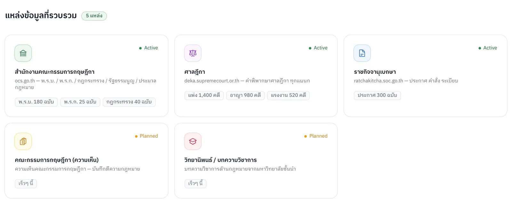
| Table | Rows | Description |
|---|---|---|
| law_sections | 84,376 | เนื้อหารายมาตรา (deduplicated) + vector embeddings |
| laws | 1,811 | กฎหมายจาก OCS ครบ 5 หมวด |
| conversations | dynamic | แชทของ user (RLS: user-only) |
| messages | dynamic | ข้อความ user + ai + citations (RLS: user-only) |
| releases | 1 | Release notes (public read) |
| system_stats | 4 | ตัวเลข stats หน้าแรก |
Prompt Engineering
ปรับ prompt ถึง v13 เพื่อให้ AI ตอบแม่นยำสำหรับทนายความ
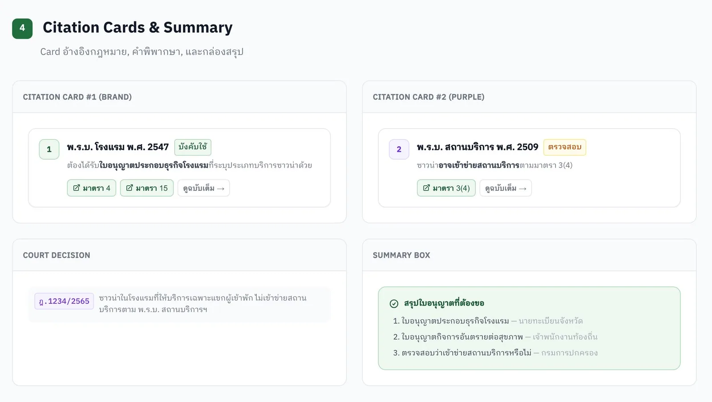
const promptRules = {
verification: "ONLY cite sections that APPEAR in DB context",
lawNames: "Use EXACT law name from database",
audience: "User is a lawyer - don't suggest 'consult a lawyer'",
format: "400-600 words, ## headings, warnings, follow-up",
model: "GPT-4o primary, GPT-4o-mini fallback",
};
Comparison: Legal AI vs Gemini Pro (5 Questions)
| Criteria | Legal AI | Gemini Pro |
|---|---|---|
| Structured Citations | ✓ Card-based | Inline text |
| Source Verification | ✓ DB-backed | General knowledge |
| Law Viewer | ✓ Real-time | ✗ None |
| Content Depth | Good | ✓ More detailed |
| Answer Format | ✓ JSON structured | Plain text |
OCS Scraper
ดึงข้อมูลกฎหมายจากสำนักงานคณะกรรมการกฤษฎีกา
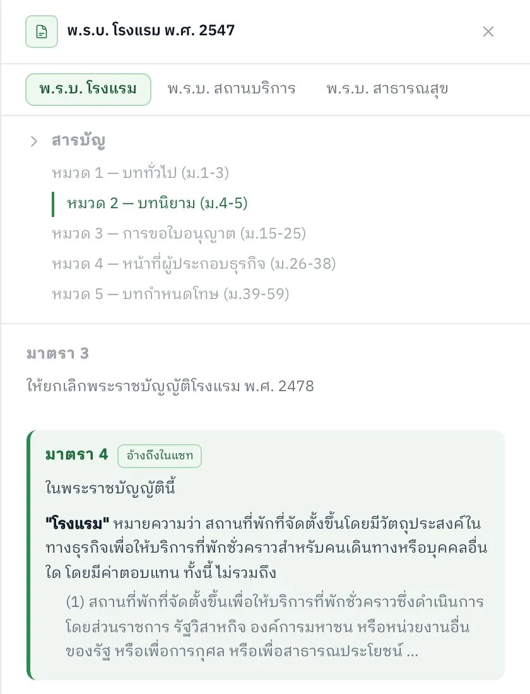
for (const law of laws) {
const doc = await fetch(`OCS_API/getLawDoc?id=${law.id}`);
const sections = parseSections(doc);
await supabase.from('law_sections')
.upsert(sections, { onConflict: 'law_id,section_number' });
}
// Result: 1,811 laws, 84,376 sections (deduplicated)
Development Timeline
สร้างจาก 0 ถึง production-ready POC
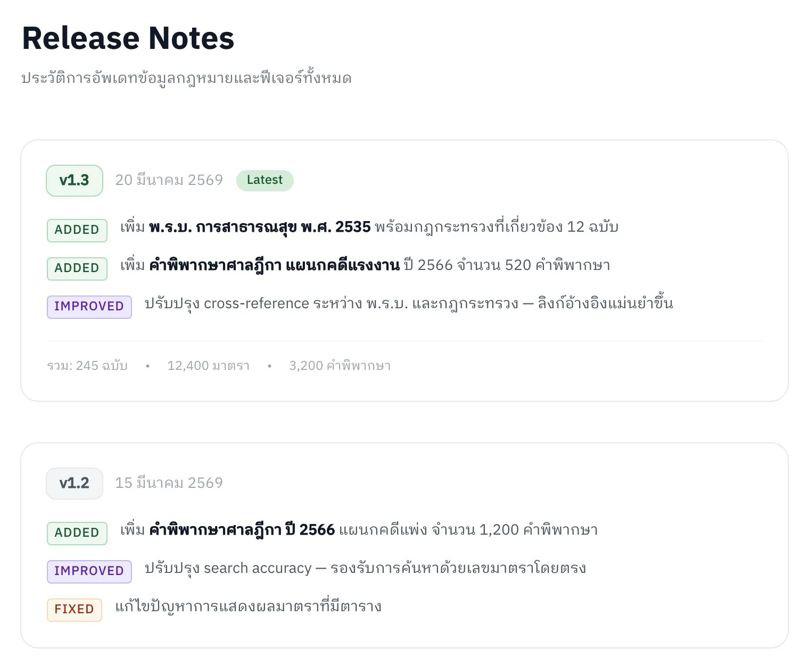
Foundation · Database + Scraper + Auth
Scrape กฎหมาย 1,811 ฉบับ 84K มาตราจาก OCS, สร้าง Supabase schema (5 migrations), Supabase Auth (Email + Google OAuth)
Landing Page · Hero + Data Sources + Login
Landing page พร้อม stats จาก DB, แหล่งข้อมูล OCS, Release Notes section, Login Modal
Chat System · 3-Panel Layout + RAG + Citations
Chat page ครบ 3 panels: Sidebar (history), Chat (AI response + Citation Cards), Law Viewer (เนื้อกฎหมายจริง)
AI Refinement · Prompt v13 + Vector Embeddings
ปรับ prompt ให้ verify มาตราก่อนอ้าง, เพิ่ม pgvector + text-embedding-3-small สำหรับ semantic search
Testing · Comparison Testing + UI Polish
Playwright ทดสอบเทียบกับ Gemini Pro 5 คำถาม, ปรับ Law Viewer highlight colors, Markdown rendering, auto-scroll
Project Structure
Frontend (React 19 + Vite) + Backend (Supabase Edge Functions)
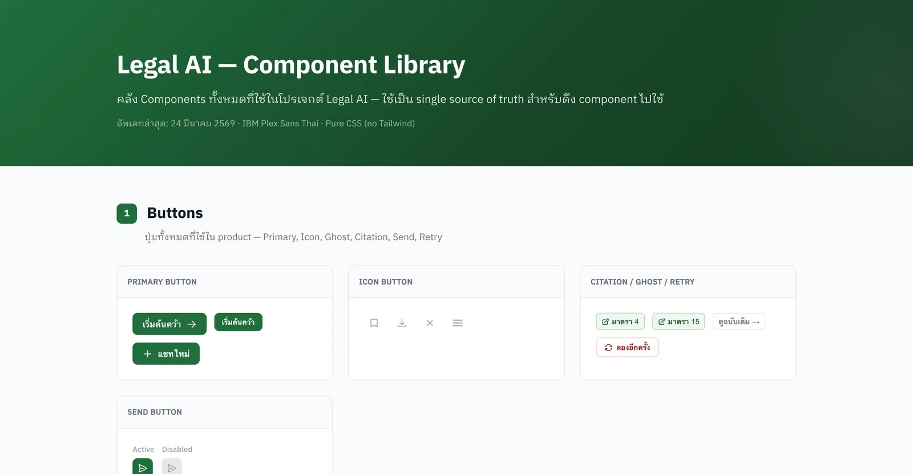
├── App.tsx // Routes + ProtectedRoute
├── pages/
│ ├── LandingPage.tsx // Hero + stats + login
│ ├── ChatPage.tsx // 3-panel chat interface
│ └── ReleasesPage.tsx // Release notes
├── components/
│ ├── chat/
│ │ ├── ChatSidebar.tsx // History grouped by date
│ │ ├── ChatMessage.tsx // Markdown + citations
│ │ ├── CitationCard.tsx // Color-coded law refs
│ │ └── LawViewer.tsx // Real law content panel
│ └── landing/ // Landing page sections
├── lib/
│ ├── supabase.ts // Client init
│ └── api.ts // All CRUD functions
supabase/
├── migrations/001-006 // Schema + pgvector
└── functions/chat/ // Edge Function v13
scripts/
├── scrape-ocs.ts // Law list from OCS API
├── scrape-sections.ts // 84K sections via getLawDoc
└── generate-embeddings.ts // pgvector embeddings
Lessons Learned
สิ่งที่ได้เรียนรู้จากการสร้าง Legal AI
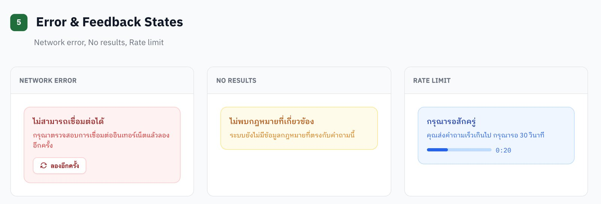
RAG > Fine-tuning สำหรับ domain-specific data — แทนที่จะ fine-tune model ซึ่งแพงและ maintain ยาก การ scrape ข้อมูลจริงเข้า DB แล้วใช้ RAG ให้ AI อ้างอิง ได้ผลลัพธ์ที่ตรวจสอบได้ดีกว่ามาก
Prompt Engineering สำคัญมาก — จาก v1 ที่ AI hallucinate มาตรา ถึง v13 ที่สั่ง "ONLY cite sections ที่ APPEAR ใน context" ลด hallucination ได้อย่างมีนัยสำคัญ
Hybrid Search (FTS + Vector) ดีกว่า FTS อย่างเดียว — Full-text search หาได้เฉพาะ keyword match, แต่ vector search จับ semantic meaning ได้ เช่น "เลิกจ้าง" match กับ "ค่าชดเชย"
Structured Output ช่วย UX มาก — การให้ AI return JSON (content + citations + summary) แทน plain text ทำให้สร้าง UI ที่เป็นระเบียบและ interact ได้ (กด citation ดูกฎหมายจริง)
Color-coded Citations ช่วยเรื่อง cognitive load — สี 3 แบบ (เขียว/ม่วง/ฟ้า) ตาม role ของกฎหมาย ทำให้ทนายเห็นภาพรวมได้เร็วโดยไม่ต้องอ่านทุกบรรทัด
Tech stack ทั้งหมด